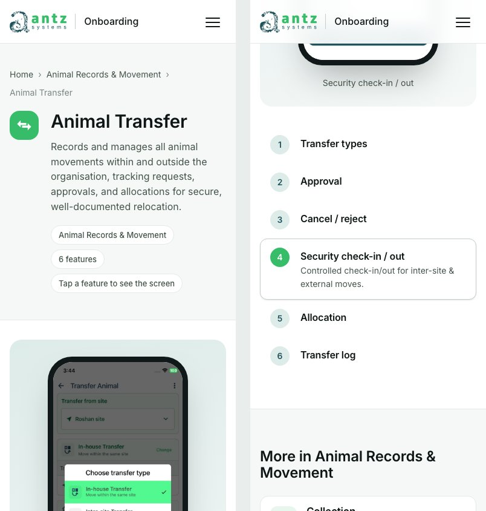
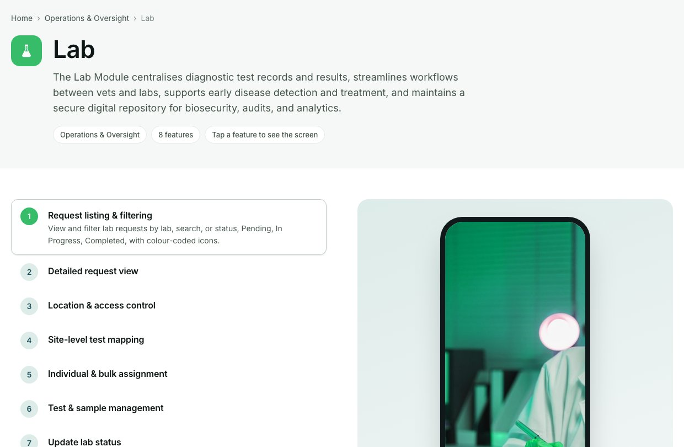
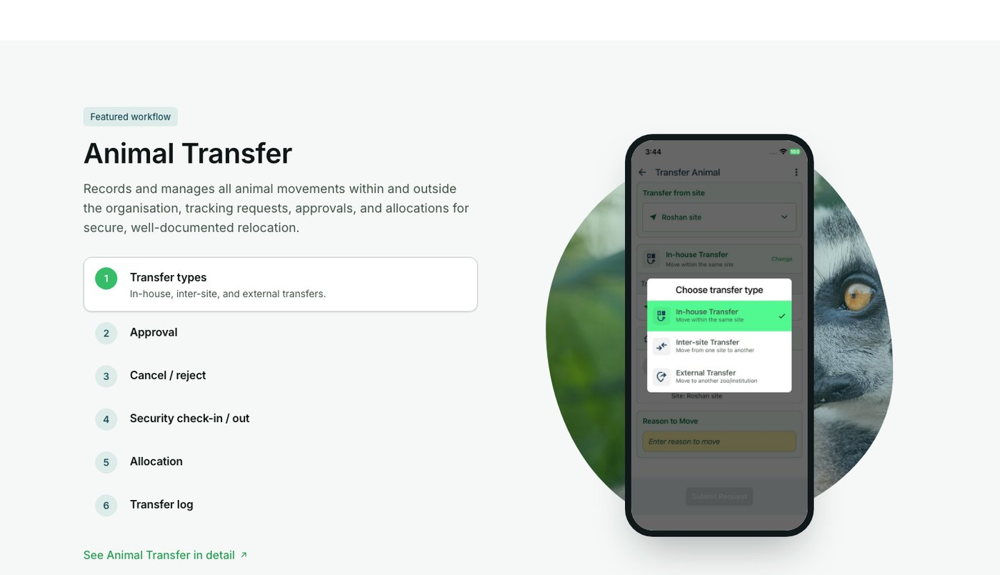
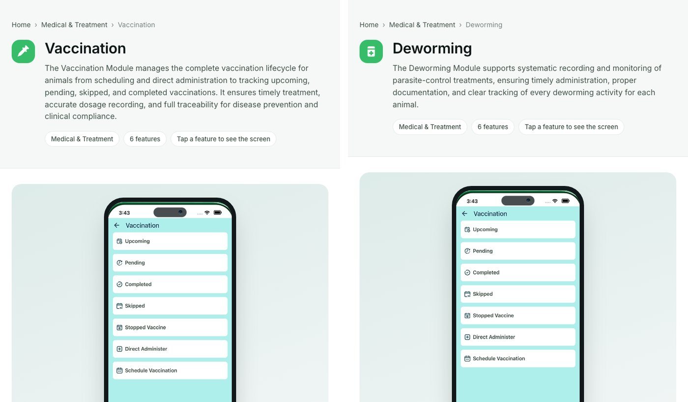
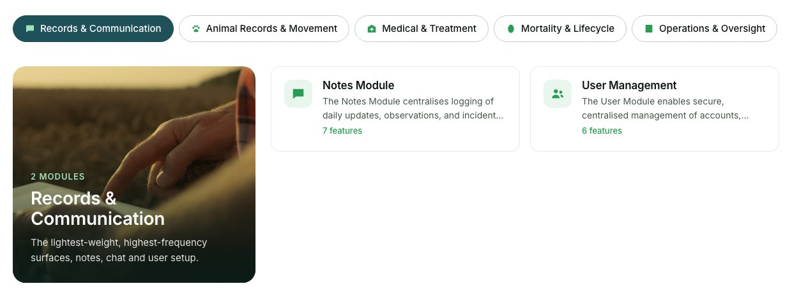
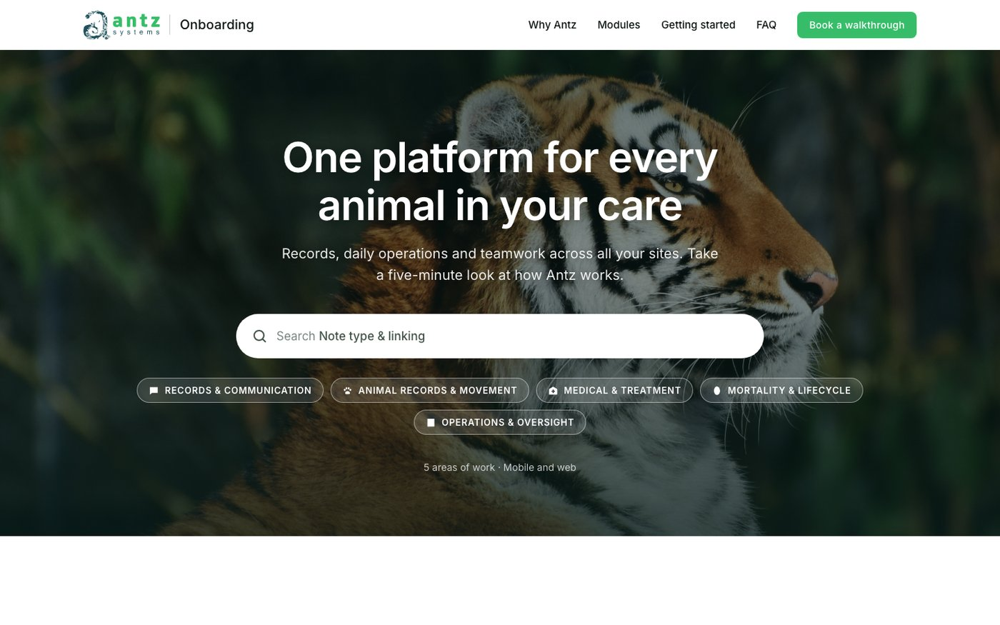
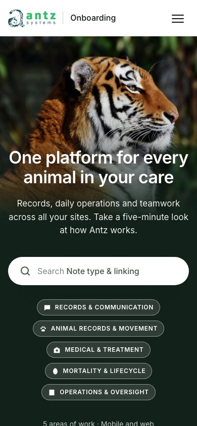
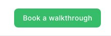

Usability audit
Antz Onboarding Kit
Web edition v0.1
What works, what gets in a prospect's way, and how to make the kit more intuitive and more beautiful.
What works, what gets in a prospect's way, and how to make the kit more intuitive and more beautiful.
The kit already does the hard part. It turns a 46-slide training deck into a short home page with real product screens one click away. A prospect can see what Antz is within seconds. The problems start when they try to go deeper or take the next step. On a phone, the product tour gives no visible feedback. Four modules show stock photos dressed up as app screens. One module shows the wrong module's screen. The only way to get in touch is an email link. The brand green also fails contrast on every primary button. All of the high-severity issues can be fixed in days, not weeks.
Expert judgement against Nielsen's 10 heuristics and WCAG 2.2 AA. Not measured with users. See Scope and method.
#27864B, or use dark text on the brand green. White on #37BD69 is 2.43:1. (F15)content.json, so a fact is fixed in one place. This was the root cause named in framing.md.A heuristic review of the kit as built, from the point of view of a prospect: a curator, vet lead or director who has never used Antz and has five minutes.
content.json

needs-capture and commission the screens.
p14-transfer-2.jpg). Let the dimmed modal appear only on step 1.
IA-MAPPING.md.
#/area/medical). Generate each area's description from the modules actually shown.tagline field of 12 words or fewer, outcome first. For example: "Every observation logged, linked to the animal, visible to the right team". Keep the long intro for the module page./ or ⌘K. Save and restore the scroll position and area tab when going back to the home page.

mailto:hello@antz.systems. On a work laptop with no mail app set up, or on a shared device, the click does nothing, and there is no confirmation either way.
#37BD69 is 2.43:1, against a 4.5:1 minimum. This covers every "Book a walkthrough" button, the step numbers and the module icons. The darker green #2A9D55, used for eyebrows, links and "N features", is 3.47:1. The light grey #7A8684 is 3.77:1. Full table in the Appendix.--green-action: #27864B (4.57:1) for button fills and green text, and keep #37BD69 for large shapes and accents. Or keep the brand green on buttons with dark text #0E1715 (7.5:1). Change the light grey to #65716D (5.08:1).combobox role or aria-activedescendant, so arrowing through results is silent. The feature steps use role="tab" with no matching tab panels.aria-pressed.p22-animal.png) and 1.6 MB. The hero JPEG is 0.7 MB. Images are lazy-loaded, but a module page on mobile data still takes seconds per screen.srcset, aiming for 150 KB or less per screen and 250 KB or less for the hero. Preload the next step's screen when a step is hovered or tapped.search_FILL0_wght400), so Material Symbols Rounded at weight 400 matches the product.Prospects don't think in modules. They think about their job and their problems. These six changes move the kit from "here's everything we have" to "here's how Antz helps you".
Below the hero, add four role cards: Curator, Veterinarian, Keeper, Director. Each opens a short path of three to five modules that matter to that role, with a line on why.
Cuts 32 choices down to four. Needs a role-to-module mapping from the product team.
Replace the single featured workflow with two or three short scenarios that cross modules: "Moving an animal between sites" (Transfer → Approvals → Security → Housing), "An animal falls ill", "An egg hatches".
IA-MAPPING.md §05 confirms the screens for the transfer scenario already exist.
Offer a "Take the tour" button that walks through five screens with Next and Back, a progress bar ("3 of 5") and a finish screen that leads to booking.
Gives a clear start, middle and end. Visitors can still leave the tour and explore freely.
Put search in the header with ⌘K. Add synonyms (HIMS → hospital, "medicine" → Administer, "death" → Mortality) and show recent searches.
Prospects use their own words, not Antz's module names.
Merge each App/Web pair and the three treatment modules. On a module page, an App | Web toggle switches the device frame and screens.
Fewer, richer modules. Shows the two-surface story visually instead of repeating it.
Keep the visitor's place when they go back. Mark modules they've already viewed with a small tick, and offer "Continue where you left off" on return visits (stored in the browser only).
Lowers the effort of long evaluations that happen over several visits.
| # | Section | Job | Change from today |
|---|---|---|---|
| 1 | Hero + search | What Antz is, in one line; search for your own problem | Crop fix, acts on suggestions |
| 2 | Proof strip | Sites, animals and species on Antz; one quote | New |
| 3 | Who are you? | Four role paths | New |
| 4 | Scenarios | Two or three cross-module stories with real screens | Replaces the single spotlight |
| 5 | All modules | Catalogue with an All view, taglines and thumbnails | Opens on All, about 24 modules |
| 6 | Getting started + call to action | First day, then book with a real form | Form replaces the email link |
| 7 | FAQ | Pricing, setup, security | Answers from the sales team |
The Figma "Help & Support" frame sets a strong direction: wildlife photography, white space, and the product on organic shapes. These changes push further in that direction and make it consistent.
Float one real Antz phone screen beside the headline, on an organic blob like the Task Management frame in Figma. Photography brings the emotion; the screen proves the product.
Three greens with set jobs: Brand #37BD69 for shapes and accents, Action #27864B for buttons and links, Tint #E8F6EE for backgrounds. Deep teal #1F515B is for dark sections only.
Module cards currently show an icon and cut-off text. A cropped strip of the module's real screen at the top of each card gives instant recognition and variety.
Pick one mood: natural light, green-leaning, the subject looking into the page, and space for text. Apply the same colour grade to every photo. Swap the chick used for "Mortality" for something calmer.
Six sizes: 56 / 40 / 28 / 20 / 16 / 14. Two weights: 600 for headings, 400 for body. Tabular numbers for counts. Sentence case for chips, which reads faster than spaced capitals.
Alternate white, soft and dark sections. Use the fern-texture band from Figma for one dark "scenario" section. Keep motion to 140, 240 and 320ms on one easing curve, as in design-direction.md.
| Use | Today | Contrast | Proposed | Contrast |
|---|---|---|---|---|
| Primary button (white text) | #37BD69 | 2.43:1 | #27864B | 4.57:1 |
| Green text: eyebrows, links, meta | #2A9D55 | 3.47:1 | #27864B | 4.57:1 |
| Secondary grey text | #7A8684 | 3.77:1 | #65716D | 5.08:1 |
| Alternative: brand button, dark text | n/a | #0E1715 on #37BD69 | 7.50:1 | |
Run with five people who match the audience: curators, vet leads, operations managers. Sessions last 20 minutes, remote, thinking aloud. Run it after the "Now" fixes.
Track success rate per task, time on task, and a single ease rating (1 to 7) after each task. Five users typically surface most of the serious usability problems.
| Pair (text on background) | Where it's used | Ratio | AA (normal text) |
|---|---|---|---|
| #FFFFFF on #37BD69 | Primary buttons, step numbers, module icon tiles | 2.43:1 | Fail |
| #FFFFFF on #2A9D55 | Button hover | 3.47:1 | Fail |
| #2A9D55 on #FFFFFF | Eyebrows, "See in detail", "N features" | 3.47:1 | Fail |
| #2A9D55 on #F5F8F7 | Same, on soft sections | 3.25:1 | Fail |
| #2A9D55 on #E8F6EE | Icons in tinted tiles (3:1 needed for icons) | 3.11:1 | Pass (graphics) |
| #7A8684 on #FFFFFF | Breadcrumb, search result meta, placeholder | 3.77:1 | Fail |
| #44544A on #FFFFFF | Body and secondary copy | 8.04:1 | Pass |
| #1F515B on #DDEBE9 | "Featured workflow" tag | 7.18:1 | Pass |
| #FFFFFF on #1F515B | Footer | 8.80:1 | Pass |
| #9FE3B9 on #1F515B | Footer hover, area counts | 5.93:1 | Pass |
| Check | Result |
|---|---|
| Visible modules | 32 of 37 in the source (3 Foundations used on the home page, 2 needs-content hidden) |
| Modules with a real screen for every feature | 28 of 32 |
| Modules using a stock photo as their only "screen" | 4: Lab, Diet, Pharmacy · Web, Compliance |
| Wrong screenshot | Deworming shows the Vaccination screen |
| Near-duplicate modules | Vaccination, Deworming, Supplements; 4 App/Web pairs |
| Intros starting "The … Module" | 28 of 37 · median length 32 words, longest 44 |
| Screenshot weight | 148 files, 39 MB · largest 1.9 MB |
Contrast ratios calculated with the WCAG 2.x relative luminance formula. Screenshots taken with Chrome 153 on 24 September 2026 from antz-onboard/.